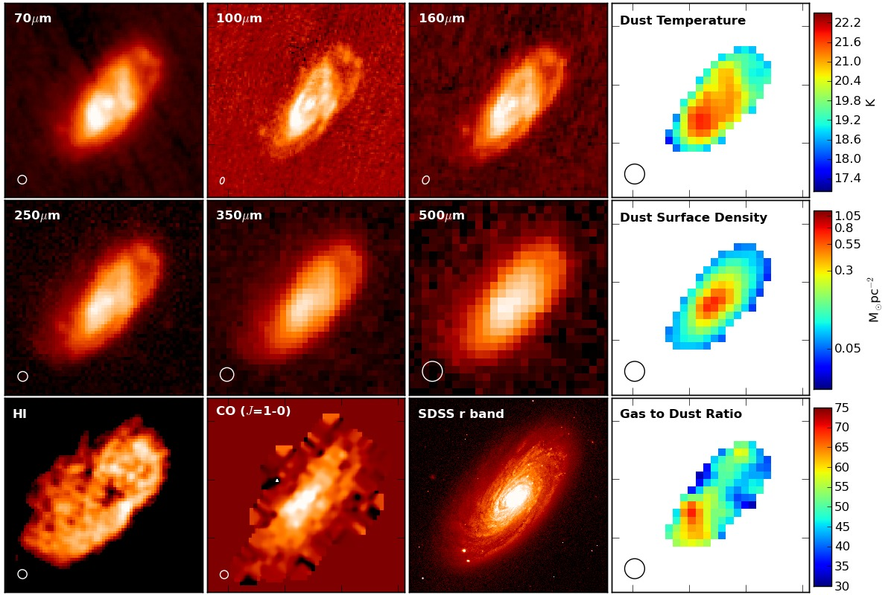
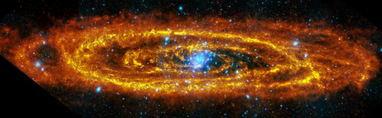
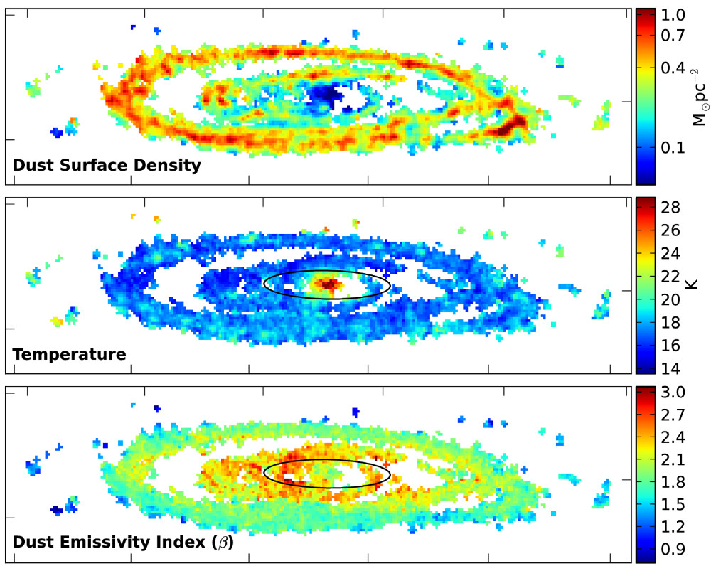

Resolved Dust Analysis of Galaxies
Resolved studies of nearby galaxies are crucial to understanding several open questions in astronomy, like how dust varies in a galaxy?,
is there a very cold dust component to the ISM which hides a large quantity of the dust?, what is the
relation between dust, gas and metals? or how do the conditions in the ISM effect the star-formation process?
Nearby galaxies also give us the opportunity to understand how large-scale properties of the galaxy (like stellar-mass, the galaxies environment, etc...),
affect the processes that occur on scales of giant-molecular clouds.

Far-infrared and Dust SED results Smith et al. 2010.
Studies investigating how dust changes throughout a galaxy have traditionally been very challenging due to a lack of resolution at sub-mm
wavelengths, a wavelength range only sensitive to warm dust (< 160µm), or lacked sensitivity. The Herschel Space Observatory
revolutionised the field, with the largest mirror in space (until JWST launches!) it had remarkable sensitivity, and its two cameras (PACS and SPIRE)
observed both sides of the SED peak (70-500µm). I undertook the first pixel-by-pixel dust analysis using the
first data from the Herschel Virgo Cluster Survey (Smith et al. 2010). I created maps of dust surface density, temperature and gas-to-dust ratio
for three galaxies, by fitting modified blackbodies to the spectral energy distribution (SED) for each pixel.
The figure shows the results of the SED fits, showing dust temperature, dust surface density and the gas-to-dust ratio. I found that
the while the distribution of dust mass is symmetrical and peaks in the centre of the galaxies, while the dust temperature
varies in the range ~19 - 22 K and peaks away from the centres of the galaxies. However, due to the angular size of the objects/resolution of
Herschel we were limited by what we could learn, to get a more detailed understanding we had to switch to much closer galaxies.
In December 2010 we obtained observations of Andromeda, the nearest Milky-Way like (?) galaxy, as part of
the Herschel Exploitation of Local Galaxy Andromeda (HELGA - one of the more contrived acronyms!). We took observations in
parallel-mode observing simultaneously at 100, 160, 250, 350 and 500µm. Our image at 250µm which was first shown live on
Star Gazing Live is shown below:

Credit: ESA/Herschel/PACS/SPIRE/J. Fritz, U. Gent; X-ray: ESA/XMM Newton/EPIC/W. Pietsch, MPE
This not only provided a great publicity image but allowed us to analysis the properties of dust
in the closest Milky Way like (?) object. To analyse M31 in Smith et al. (2012) we took a very conservative approach by
smoothing and re-gridding all the images to match the 500µm images; this still left us with ~4000
quasi-independent pixels! The results of the SED fitting can be seen in the figure below.

The distrubtuion of dust surface-density, temperature and β in M31; Smith et al. 2012.
When fitting the SEDs I found the surprising result that a single dust emissivity index (β)
does not fit the data, instead this had to be left as a free parameter. This was the first extragalactic evidence
from dust-emission that the properties of the dust varies within a galaxy. The radial variation of β
that I found could possibly be explained by variations in dust grain sizes, mantle growth, or composition of the dust.
Unfortunately we were unable to identify which of these processes is causing the variations we see.
I also found that the old-stars in bulge can heat the dust to a lot higher temperatures (~30K) than is seen typically in the disk (~17K), just due to stronger interstellar radiation
field from the density of stars. I also attempted to detect 'dark gas', that is molecular gas not traced by the usual CO tracer. Our search did not reveal a detection,
but we were able to measure the CO to H2 conversion factor (X-factor) as 1.9 ± 0.4 cm-2 [K kms-1]-1. To see the complete results from the
SED fitting paper click here.
The HELGA survey has so far written seven papers based on the Herschel data. One science highlight by George Ford investigated the Schmidt-Kennicutt law in M31 and found that
like other nearby galaxies investigated by the HERACLES survey that the surface-density of star-formation is best correlated to the surface-density of molecular gas, rather than atomic
or total gas. Unlike the HERACLES team though instead of finding a power-law relationship with N~1, we find a much lower value of N~0.6. The figure on the left below
shows the resolved Schmidt-Kennicutt law. Another interesting result by Sébastien Viaene (shown below on the right), is that individual regions of
Andromeda lie on the same global relations as found by the HRS sample of nearby galaxies.
To make significant progress in the future we need to get data at longer wavelengths and higher-resolution. To address this I am leading a new large program on the JCMT called
HASHTAG, to map the whole
of Andromeda at 450 and 850µm with SCUBA-2. With this data and new SED-fitting techniques we will be able to map the dust with 25pc resolution. For more details about this project
see my HASHTAG page.
{kind=link}
{kind=link}
{kind=link}
{kind=link}
{kind=link}
{kind=link}
{kind=link}
{kind=link}
{kind=link}
{kind=link}
{kind=link}